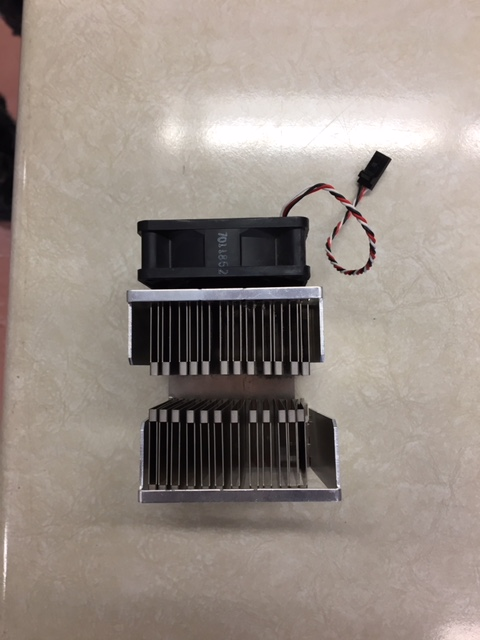
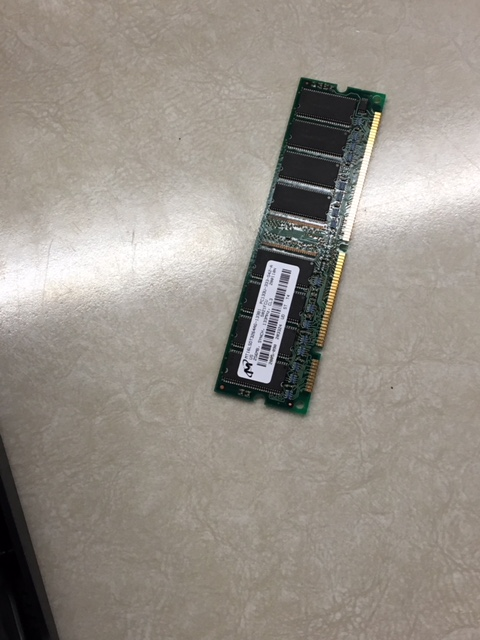
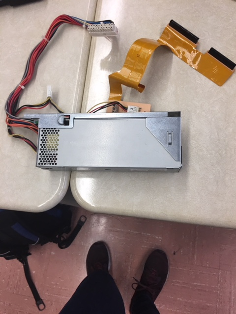
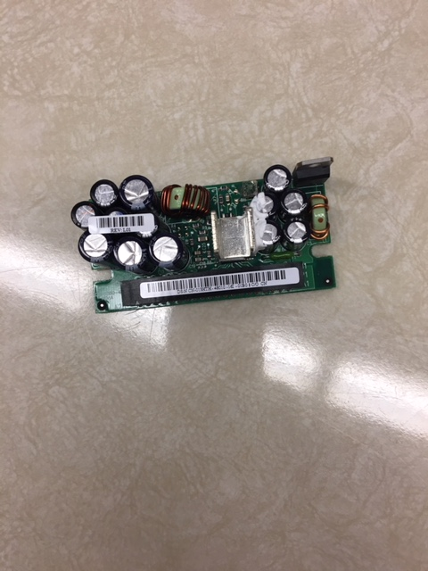
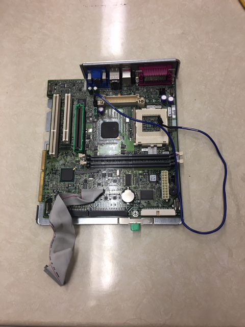
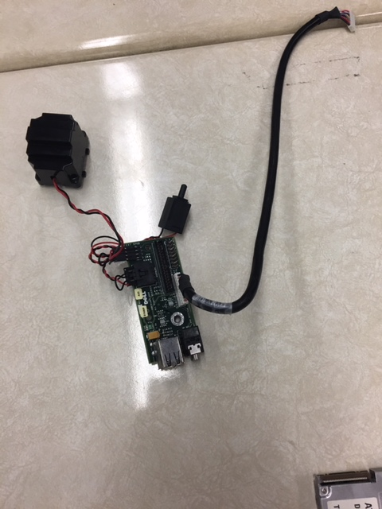
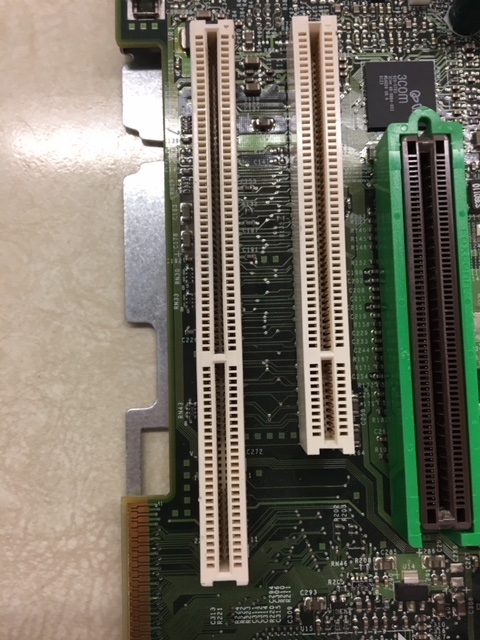

What is a PC?
A PC unit, which stands for personal computer unit, is a general purpose computer that is designed to be used by one person at a time, hence the name “personal computer”. They are single-user systems and are based on microprocessors. In the mid 1960s and into the 1970s, computers occupied entire rooms and were only affordable by large universities and enterprises. By the late 1980s, technology had advanced enough that a small computer could be used and owned by anyone. Today, the world of personal computers is basically divided between Apple Macintoshes and PCs. They can be used in an office, at home or school, for applications such as word processing, data management, financial analysis, or computer games. A PC unit contains the following components:
- Motherboard
- Central Processing Unit (CPU)
- Random Access Memory (RAM)
- Read-Only Memory (ROM)
- Power Supply Unit (PSU)
- Temperature Cooling Fan
- Voltage Regulator Module (VRM)
- Permanent Storage
- Etc.
Floppy Disk Drive
An internal floppy disk drive reads data storage information. A floppy disk drive accesses data recorded on small, removable diskettes known as floppy disks.It was invented in 1967 by a team at IBM, and was one of the first types of hardware storage that could read or write a portable device. Floppy disks are now outdated, and have been replaced by other storage devices such as USB.
Temperature Cooling Fan
The main purpose of these fans is to ensure that acceptable temperatures are maintained in an electronic device. The CPU as well as other components in a PC use a lot of energy when running, and as a result, there are large amounts of heat being created. Together, the device and fan work to maintain optimal temperatures, by maximizing performance and longevity and protecting against harmful overheating. The blades spin at different rates proportionately to the required amount of cooling.
Random Access Memory (RAM)
RAM is a place in the computer that applications and data in current use are kept. They are kept there so they can be accessed quickly by the processor. Data remains in the RAM as long as the computer is running. It is also much faster than other storage options such as a hard drive.

Central Processing Unit (CPU)
CPU stands for central processing unit, and it is responsible for interpreting and executing most of the commands from the computer's other hardware and software. The CPU is often referred to as the brain of the computer. There are many names for the CPU: processor, computer processor, microprocessor, central processor, etc. A modern CPU is usually small and square It has many short, rounded, metallic connectors on its underside.
Power Supply Unit
The Power Supply unit is hardware in a computer that is used to convert power from an outlet into energy that different parts of the computer can use. The power that it gets from the outlet is called alternating current, and the one it converts into for the computer is direct current. The power supply is not an unnecessary piece of the computer. It is crucial to the computer’s makeup.
Voltage Regulator Module (VRM)
A voltage regulator module does exactly what it is named: regulates the voltage. It is sometimes called a processor power module. The voltage delivered to different electrical components may vary so the VRM provides the microprocessor, appropriate supply voltage required by the components.
Motherboard
The motherboard is one of the most essential parts of a computer system. The CPU, memory, hard drives, and other ports and expansion cards all connect to the motherboard directly or by cables. The motherboard's primary purpose is to manage all the computer's subsystems. It allows communications between the many crucial electronic components of a system unit.
USB Audio Board
This part of the computer connects to the front of the computer and provides users with a few slots to put their USB drives in. It is also connected to the speaker and there is a hole that can be connected to an electric device such as a pair of headphones.
Expansion Slot
An expansion slot refers to any of the slots on a motherboard that can hold an expansion card to expand the computer's functionality, like a video card, network card, or sound card
How do the components interact?
All the components discussed above are devices within the computer that process information. The components of the computer must interact with each other for the PC to perform the functions demanded by the user. The CPU and the RAM work together to run programs. When you download a video game, it is stored in the hard drive of the PC. The computer uses RAM to run programs because it is much faster than hard drives, and will help the game experience be more fluid. Video cards/graphic cards are usually added when you use graphic-intensive programs such as video renderers or modern 3d games. Video cards generally do graphic-based programming instead of the CPU when they are used, because they process the images quicker and with better quality. The expansion slots hold the extra cards a user might add. The CPU generates a lot of heat on its own without the extra cards. That is why all computers require at least one temperature cooling fan to ensure the unit does not overheat. The power supply of the computer provides energy to all of the components of the computer. Without it, the computer will not run. When the PC is turned on, the BIOS chip will begin performing the bootstrap program which takes the computer through the process of starting up, and also helps with fundamental things such as the screen and the keyboard of the computer. The BIOS chip also contains the ROM which is the read only memory of the unit. ROM memory does not change so the microprocessor can access it, but not modify it. The USB audio board is used to help the user input peripheral devices like a USB drive or headphones.
Sources (Plain text file)